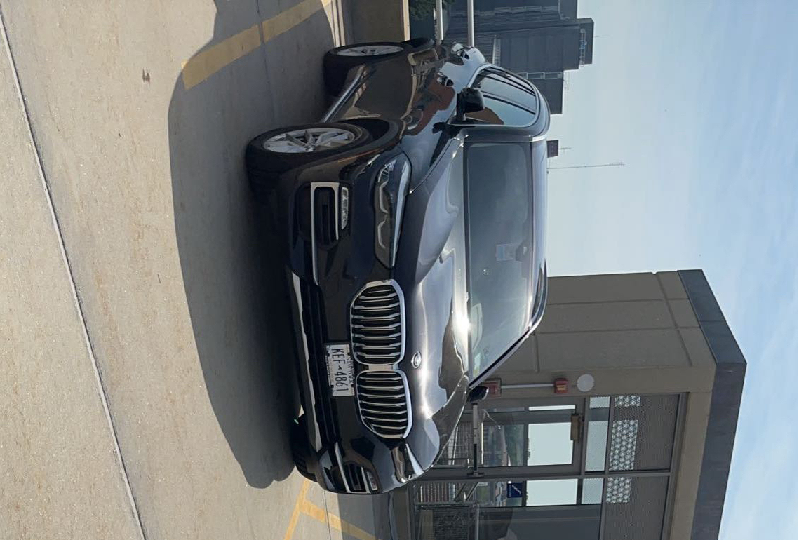

Model:
Specific Model:
Engine Type:
Transmission:
HORSEPOWER (BHP @ RPM):
ACCELERATION 0 - 60 MPH SEC:
COMBINED (MPG):
Top Speed (MPH)
Audio System:
x5
x5 xDrive40i
3.0-liter BMW M TwinPower Turbo inline 6-cylinder
8-speed Sport Automatic transmission with Sport and Manual shift modes, steering wheel-mounted paddle shifters
335 @ 5000-6500
5.3
151
23
HiFi Sound System with 205-watt digital amplifier and 10 speakers
x5 M
x5 M
4.4-liter BMW M TwinPower Turbo V-8
8-speed M Sport STEPTRONIC transmission with Drivelogic, Sport and Manual shift modes, steering wheel-mounted paddle shifters
600 @ 6000-6000
3.7
177
15
Harman Kardon® Surround Sound Audio System with 464-watt amplifier and 16 speakers